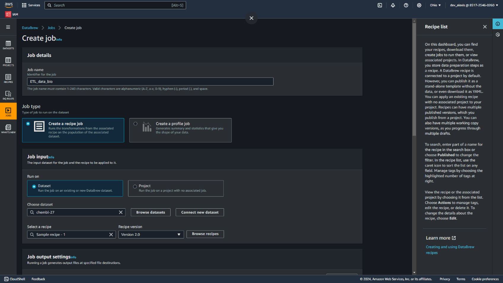
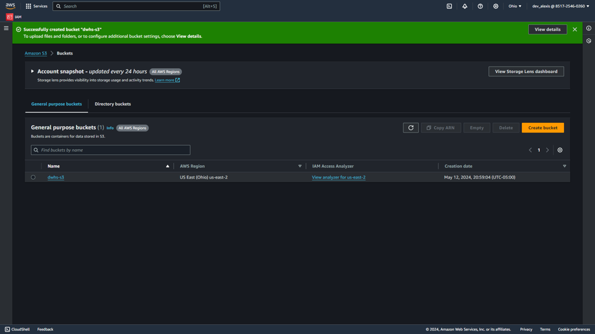

ETL para el analisis de moléculas bioactivas e información genómica
Comas, Lima
Desarrollo del proyecto en AWS
Descripción:
Este dataset, es extraida desde la base de datos ChEMBL, la cual se trata de una base de datos
que contiene información sobre moléculas bioactivas o información genómica que le permite a
científicos e investigadores poder crear fármacos efectivos. Esta base de datos recopila información
química, de bioactividad y genómica para facilitar la traducción de datos genómicos en nuevos fármacos
efectivos.
Objetivo:
Para este dataset, se pretende realizar un procesamiento y limpieza, con apoyo de la herramienta
AWS Glue Data Brew.
Diseño lógico de la solución cloud:
En primera instancia se generan las credenciales de usuario root en IAM , configurando
un MFA y usuario administrativo en IAM identity center con un MFA diferente.
Configuramos también la herramienta de AWS CLI para su comunicación con el sistema operativo,
de esta forma poder gestionar los servicios de AWS desde el command line, configurar
credenciales y permisos de usuarios AWS.
Ahora a generar un usuario IAM (Indentity and Access management) desde la cuenta root creada para
fines de cumplir con políticas de seguridad AWS y evitar configuraciones malintencionadas, también
aprovechar la gestión y control de los roles y permisos asignados en cada servicio.
Nótese:
Esta cuenta ha sido creada y configurada bajo el grupo ‘admin_dv’ y dispone de hasta 6 roles,
incluyendo el acceso al servicio de AWS Glue Databrew para efectos del procesado de la data
El inicio de sesión a la consola y trabajo del proyecto entonces será desde la cuenta
‘dev_alexis’. Acto siguiente, procedemos a localizar el servicio Glue DataBrew y usar
la BD en mención
A simple vista, podemos ver que inicialmente tenemos 39 columnas y 500 registros o
filas en la tabla.
Dado que no vamos a hacer uso del campo “TID-FIXED”, procedemos a elegir la herramienta
COLUMN eliminarlo y este proceso se adjunta a la receta de Limpieza/transformación que se debe
publicar luego.
Acto siguiente, bajo una condición de FILTER, procedemos a eliminar todo aquel registro del
campo “CONFIDENCE-SCORE”, cuya magnitud sea menor o igual que 7
De esta forma, quedamos solo con 119 filas y 38 columnas.
Revisando la data, podemos apreciar que existen demasiados “nulls” para el campo "ASAP_TEST_TYPE"
y "ASSAY_CATEGORY" lo que va implicar que se deban rellenar con algún valor especifico, nos apoyamos
entonces de MISSING
Configuración del Bucket del servicio Amazon S3
Este servicio, esta diseñado para alojar todo tipo de datos, posee una capacidad limitado en el plan gratuito.
Por otro lado, se posiciona en el mercado como uno de los principales lideres en su categoria
Para esto contamos con las siguientes características a configurar:
Nombre único, sin caracteres especiales
Configuramos región, para el caso es US East (Ohio) us-east-2
Habilitamos encriptación del lado del servidor.
Capacidad para 300 objetos
Procedemos ahora a crear trabajo en el AWS Glue Databrew, configurando las siguientes propiedades:


En el siguiente esquema, se pueden apreciar los parametros base que conlleva construir un repositorio
o Datawarehouse, los 3 principales son: salida de datos, tipo de archivos y tipo de compresión.
Ya en este último punto, consta del despliegue y ejecución automática del ETL creado, conocido también
como Scheduler, puede ser posible programarla inclusive. Toda la data que se actualiza, pasa por este
dataflow y se aloja en un sistema de almacenamiento para su puesta en producción.
Nota:
Podemos validar el actual flujo de procesamiento de datos desde la opción Linage. Dentro, se visualiza el
esquema lógico que la data sigue, así como los servicios que la soportan. Por ejemplo, se encuentra alojada
en un bucket (contenedor lógico) de Amazon S3. s3://databrew-public-datasets-us-east-2/chembl-27.parquet